上文看過366首詩歌寫成時的消極背景：基督徒必須對抗希臘哲學的誤導並忍受羅馬帝國的逼迫。但是，在那同時，也有一件積極的事相應而生。
.
事實上，正是這一件積極的事，勝過了當時消極的內憂外患；
也是這一件積極的事，在這首詩歌中有如復活的馨香之氣，叫所有的憤恨苦情消聲匿跡。
.
這一件積極的事，就是神對人之救恩的目的被揭示了！
.
神的救恩，就是「神成為人，為要使人成為神。」
.
在這首詩歌中，是這樣說的：
人哪！你愛何物，你就變成該物：成神，你若愛神；成塵，你若愛塵；
.
達到此境的路，就是：
你出，神就進入；你死，神就生甦；無你，就有基督；無物，就得萬物。
.
走上這路的祕訣，乃是：
你若要得著神，切勿跟從智慧；愛是最短路徑，使你免去紆迴。
.
使徒保羅在羅馬書�婸﹛G
.
誰能使我們與基督的愛隔絕？難道是患難麼？是困苦麼？是逼迫麼？是飢餓麼？是赤身麼？是危險麼？是刀劍麼？
如經上所記：“我們為你的緣故，終日被殺，人看我們如將宰的羊。”
然而藉著那愛我們的，在這一切的事上，我們已經得勝有餘了。
.
「神成為人，為要使人成為神」是第四世紀初一位青年衛道教父的名言。這位教父名叫亞他那修（Athanasius
)，是當時在召會中對抗亞流派異端教訓的主要人物。
366首詩歌的作者，想必在那極端困苦的環境中，享受著這種對救恩深刻的認識與經歷。
.
我們不清楚這首詩歌是如何在其後的十九個世紀中被愛主的基督徒傳唱，但至少有一個人，十七世紀的德國弟兄西里修斯（Angelus
Silesius），在他一首有61節的長詩中引用了其中的要句，並有進一步的發表，以下是他那首長詩的一部份內容。這是從德文譯成英文，我們就來看它的英譯版吧：
.
32
Had Christ a thousand times,
Been born in Bethlehem,
But not in thee, thy sin
Would still thy soul condemn.
35
Golgotha's cross from sin
Can never ransom thee,
Unless in thine own soul
It should erected be.
41
Man should not stay a man:
His aim should higher be.
For God will only gods
Accept as company.
45
The saint is rising higher;
He's changed to God in God;
The sinner downward sinks,
Is changed to dirt and clod.
48
The nearest way to God
Leads through love's open door;
The path of knowledge is
Too slow for evermore.
.
問題是，經過一千五百年後，這位西里修斯在這首長詩�堻o樣的發表，已成為驚世駭俗的激烈言論，甚至於不見容於他原來所屬的德國路德宗。於是，他投向了當初路德改教的大對頭-羅馬天主教之陣營，成為天主教中德國的奧祕派主要人物。
.
這算是我們這次賞詩系列的插曲。下一篇，我們要把731，729，和366這三首詩歌擺在一起，來探討一個問題，而這個問題的解答，要引進另一首詩歌。
喜愛敬拜音樂的你，有聽過這些詩歌嗎？近期一位國外YouTuber大衛•韋斯利（David
Wesley）用短短8分鐘，整理了公元560年至2017年的詩歌。快來聽聽你知道哪些歌吧！
（影片來源／David Wesley）
https://youtu.be/2SaBhN2idbM
December 21, 2017 admin 成長篇, 教會歷史這一週 0
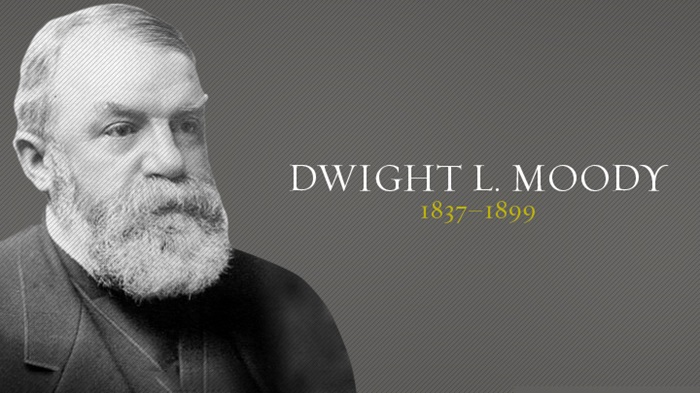
創意性的佈道法
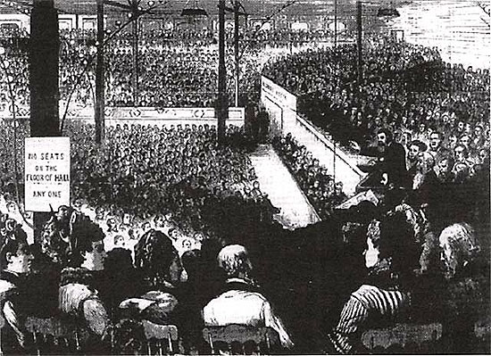
眾傳講福音
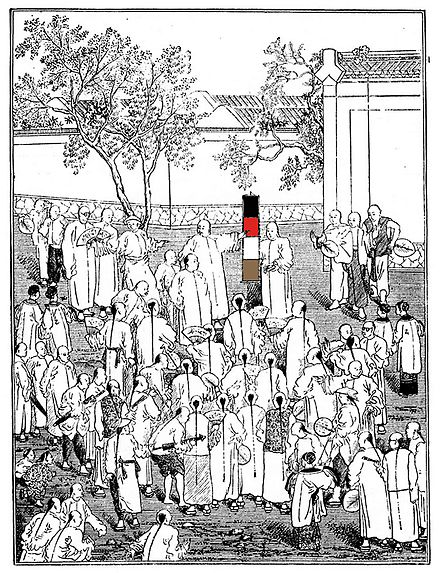
最後，在1886年，穆迪在芝加哥開創了“芝加哥福音會社聖經-事工學院”（這個學院在他過世後，被改名為穆迪聖經學院）。這是所有聖經學院中最早開始的一間。而從這個事工中，他又開始了另外一個工作：在1894年，他成立了科爾坡他啟會社（後來改名為穆迪印刷社）。學院的學生用馬車去四處銷售價廉物美的基督教書籍。https://behold.oc.org/?p=34970
本文原刊於《舉目》官網“言與思”欄目2020.3.2
黃奕明
最近我看了一部電影——《1917》，該片號稱一鏡到底的攝影技術，引發了許多電影迷的關注與討論，甚至成為奧斯卡金像獎的大熱門。但是讓我感興趣的，卻是一段壕溝中的片段，因為這片段讓我想起了一首英詩——《奇異的會面》：
我好像逃脫了戰場，
掉在一個已經挖掘很久的又深又暗的隧道中，
穿過花崗岩－巨大戰爭所造成的穹稜。
這是英年早逝的英國反戰詩人歐文(Wilfred
Owen,1893-1918)的詩。我並不是個詩人，更不懂得英國文學，之所以知道這首詩，乃是因為1992年在貝桑松國際青年指揮大賽的準決賽時，指揮了布列頓戰爭安魂曲中的合唱片段。這首安魂曲作於第二次世界大戰之後，是為了慶祝在二次大戰中，毀於戰火的英國科芬特里大教堂(Coventry
Cathedral)之重建落成而作。
布列頓寫作此曲，並不只是為了慶祝教堂重新啟用，更為了警告世人戰爭之可怕，希望能讓世人記取戰爭的悲慘經驗，進而永遠消弭戰爭。他混合傳統安魂彌撒的拉丁文歌詞與自選歌詞，將歐文的九首詩，穿插在安魂彌撒拉丁文歌詞的各章之間，拉丁文與英文交替進行。
電影《1917》一開場，兩位士兵史科菲爾德和布萊克就在壕溝中穿梭，他們穿越無人區，進入到已經荒廢的德軍的戰壕。在戰壕的地道中，一隻老鼠碰到了絆線，使埋藏的炸藥爆炸。爆炸造成洞穴塌方，土石方掩埋了史科菲爾德。幸虧布萊克徒手將他挖出來，把他拉出地窖，他才逃過一劫（註1）。
我幾乎可以在電影中，聽見歐文的詩與布列頓的音樂。布列頓原則上是以獨唱與合唱區別兩種語文，由男高音、男中音的獨唱或二重唱表現英文部分，而合唱、女高音獨唱、女高音與合唱則表現拉丁文部份。樂器編制上則為管絃樂團、室內樂團、管風琴，女高音獨唱、合唱團、管絃樂團為一組，表達世人祈求神的憐憫，為死者祈求安息，以及對於末日審判的恐懼；男童合唱搭配管風琴，所唱經文為讚美、對於神的信仰，布列頓將之定位為“遙遠、來自天國的聲音”；拉丁經文部份所訴說的是集體的宗教信仰，以男聲獨唱的英詩部份，則形成強烈對比，訴說個人情感經驗，以個人的角度重新詮釋死亡，尤其是戰爭所帶來的死亡。
藉由語言文字上的對比、器樂與聲樂編制上的差異，兩種文本之間的“互為文本性”(intertextuality)編織出新的網絡與詮釋，相互置換、顛覆、對位、化解，雖然外表是一件音樂作品，卻含有多重音樂文本、多重意識形態的交織，以及多層意識與無意識之間的互動。它不僅顛覆傳統的安魂曲形式，在內容上更質疑其背後的意識形態，“震怒之日-萬物化為灰燼”之後，末日審判來臨，傳統安魂曲接下來會是讚美神恩、祈求神的憐憫、請求神賜給死者安息並帶領他們進入天國。但由布列頓穿插歐文的詩的位置來看，他對此提出了強烈質疑。最後的安所經Libera
me（註2）加入歐文《奇異的會面》一詩，描寫兩名士兵死後並非在天堂相遇，而是在一幽深無底的地道中，只能絕望，但緊接其後的加唱曲“領進天國”，與前面的感受便形成了對比與矛盾。
安所經Libera me
終曲一開始由戰鼓聲帶來的緊張感，合唱團輪番唱出賦格般的半音動機，彷彿是在戰場上的匍匐前進，又像是在壕溝中穿行，或是經過了佈滿屍體的泥濘沙場，我只能說，這實在是唱出了電影《1917》的場景了。
Libera me, Domine, de morte aeterna, 天主，在那可怕的一天裡，
in die illa tremenda: 請從永恆的死亡中將我拯救出來：
quando coeli movendi sunt et terra: 屆時天地都將震撼，
Dum veneris judicare 而你將以地獄之火
saeculum per ignem. 來審判人世。
由女高音領唱的部分，代表著眾多等待審判的靈魂的呼聲，“震怒之日”的動機穿插著出現，末日的號角響起，合唱團漸次加入，在槍砲聲中，迎向最後審判！
Tremens factus sum ego, 驚懼與顫抖遍佈我身，
et timeo, dum discussio venerti, 我極度害怕
atque ventura ira. 即將來臨的審判與神怒。
Quando coeli movendi sunt et terra. 屆時天地都將震撼。
Dies illa dies irae, 那一天，神怒之日，
calamitatis et miseriae, 充滿深刻的絕望與無限的悲慘，
dies magna et amara valde. 那將會是偉大而極其痛苦的一天。
Dum veneris judicare 屆時你將以地獄之火
saeculum per ignem. 來審判人世。
男高音的聲音，是個英軍士兵，在室內樂團的伴奏下，吟唱著：
我好像逃脫了戰場，
掉在一個已經挖掘很久的又深又暗的隧道中，
穿過花崗岩－巨大戰爭所造成的穹稜。
那裡也有背負重擔的躺臥者在呻吟，
由於太過陷入沉思或死亡，不便打擾。
我更近一點觀看他們，有一個人跳起來，
不動的雙眼帶著悲慘的神情凝視著，
他舉起苦難的雙手如同要祝福。
沒有槍砲射擊或透過通風孔傳來哀號。
“陌生的朋友，”我說：“這裡沒有理由悲傷。”
現在讓我們睡吧
布列頓的首演中，他自己指揮室內樂團，為男聲二重唱伴奏，在他的指揮中，我幾乎可以想像壕溝與死屍遍布的場景，而男中音唱的角色，實際上是個德軍士兵，他唱道：
“沒有人，”另一個說：“除去失落的年代，無望。
任何你有的希望，也曾是我的生命；
我出外胡亂打獵，追逐世界上最野性的美女，
因為我的歡樂也許有許多人大笑，
而我的哭泣可能會留下些許東西，它現在必死。
我是指未說出來的真相，
戰爭的不幸，這不幸，是戰爭生出來的。
現在人們會滿意我們所破壞的，
或不滿，血腥地沸騰，噴濺出來。
他們將快速如母虎之敏捷，
沒有人會故步自封，即使各民族放棄進步。
讓我們抽身跳出這後退世界的行進，
進入沒有築牆的空虛避難處。
然後，當很多血阻滯了他們戰車的輪子，
我願起身在清甜的井邊洗它們，
即使是從那些我們為了戰爭鑿得太深的水井，
甚至是最清甜的水井。
我是你所殺的敵人，朋友。
在這黑暗中我認得你，
因你昨天皺著眉頭穿透我，當時你又刺又殺。
我躲開，但我的手不情願也冷了。
現在讓我們睡吧…
然後男童合唱搭配管風琴，彷彿從天上傳來的天使歌聲，唱出：
In paridisum deducant te Angeli;
願天使領你進入天國，
in tuo adventu suscipiant te Martyres,
願殉道聖者接你前來，
et perducant te in civitatem sanctam
領你進入聖城新耶路撒冷。
Jerusalem. Chorus Angelorum te suscipiat,
願天使歌隊歡迎你，
et cum Lazaro quondam paupere aeternam
願你與昔日窮苦的拉撒路同享永遠的安息。
Requiem aeternam dona eis Domine:
天主，賜予他們永恆的安息吧，
et lux perpetua luceat eis.
也讓永續的光芒照耀他們。
最後，女高音獨唱、合唱團、管絃樂團為一組，表達世人祈求神的憐憫，為死者祈求安息，以及對於末日審判的恐懼，漸次加入演唱，男聲二重唱繼續唱著：
現在讓我們睡吧……
全曲在合唱團的無伴奏聖詠中結束，伴著象徵天堂的鐘聲：
Requiescant in pace. Amen.
讓他們安息吧，阿們！
你會有信心嗎？
歐文與布列頓發現，在死亡之後迎接人的不是充滿榮光的天堂，而是陷入無底深淵、黑暗地獄。歐文早期受到浪漫英雄主義影響，認為參戰是主持正義、捍衛國家，在他早期作品中，不難找到具有國家主義思想的詩作。但是他在1917年經歷戰爭的血腥殘酷，親眼目睹陳屍遍野的陣亡士兵，對戰爭轉而抗拒和批判，開始描寫戰爭中的恐懼、悲哀、絕望、無理性的毀滅，以及他對戰爭的憐憫。
布列頓將歐文的詩集序放在總譜的首頁：“我的主題是戰爭，與因戰爭而生的憐憫之情。詩存在於憐憫之中……今日詩人唯一能作的只有提出警告。”全曲中“震怒之日”主題不斷反覆出現，象徵戰爭的末日景象，不斷提醒著戰爭可能帶來可怕的殺傷力。
安魂曲是紀念死者的音樂，但藉由安魂曲背後的意義，也能撫慰生者，甚至作為反戰、及對於文化和時代的省思。死亡無可避免，任何時代都需要安魂曲，藉此探討死亡、反省存在的意義。
新的千禧年才正開始，歷史告訴我們：戰爭現場宛如地獄。兩次世界大戰摧毀的，不僅是歐洲人的生命財產，也摧毀了他們的信仰。苦難永遠是難解的問題。D. A.
Carson說：“當我們受苦時，時有難解的奧秘，但是你會有信心嗎？是的，會有的。如果我們的注意力不是放在苦難本身，而是多放在十字架，以及十字架的
神身上，那就一定會有的。”(註3)
作為一位牧師，我主持過許多追思禮拜，基督教並不用“安魂曲”的經文，我們的重點放在等待末日的復活，而不是對於末日審判的恐懼。即使在新天新地裡，也可能會有“奇異的會面”，然而應該是大和解，神與人和好，帶來了人與人之間永遠的和平。
當全世界攜手對抗新型冠狀病毒2019-nCoV的疫情擴散時，人類的戰爭與屠殺顯得何等愚昧？封城或是禁止入境只是開端，緊接著可能是種族歧視，筆者想問，看著別人的國家崩毀，自己有什麼好處呢？我們不是只有一個地球嗎？難怪“奇異的會面”並非在天堂，而是在一“幽深無底的地道中”。
尾聲
電影《1917》的尾聲，史科菲爾德找到了布萊克的哥哥約瑟夫，約瑟夫參與了第一波進攻，但是沒有受傷，正在負責指揮傷員的搬運。史科菲爾德告知約瑟夫他弟弟的死訊，約瑟夫聽罷非常震驚，不過也感謝史科菲爾德的努力。史科菲爾德說想要寫信告訴布萊克母親她兒子的英勇事跡，約瑟夫同意了。史科菲爾德走進附近的一棵樹，坐在樹下休息。他拿出隨身攜帶的日記本，拿出了夾在裡面的照片，照片上是他的兩個小女兒和妻子，他們正等他回家。故事起於樹下小憩，也止於樹下小憩場景，兩張照片，一個眼神，一行字，一個吻，表達內斂且自制的感情。（註4）
註
維基百科，自由的百科全書https://zh.wikipedia.org/wiki/1917_(電影)
2、維基百科，自由的百科全書https://en.wikipedia.org/wiki/Libera_me
3、陳煒智，一氣呵成的《1917》——談“一鏡到底”的美學與迷思，聯合新聞網，鳴人堂， 04 Feb, 2020. https://opinion.udn.com/opinion/story/12827/4320278
4. 卡森，認識苦難的奧秘，台北：校園，1997年12月。
ttps://behold.oc.org/?p=43667
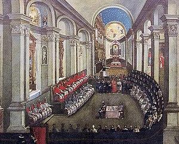
賀宗寧
本文原刊於《舉目》官網教會歷史這一週2017.12.15
公元1545年（明世宗嘉靖24年）12月13日，教皇保祿三世有鑑於新教蓬勃的發展，在意大利北部的天特召開公會，商討對策。
天特會議（ The Council of Trent，又譯特倫特會議）是天主教在馬丁路德改教28年後，於 會議 。這個會議前後18年，在4個時期中一共召開了25次會程，歷經4位教皇，是天主教會對宗教改革的決定性回應。
年份
教皇
天特會議狀況
1545
保禄三世
召開會議於天特，34位主教參加
1547
保禄三世
遷至波隆納開會
1549
保禄三世
9月17日休會
1551
尤利烏三世
5月1日復會
1552
尤利烏三世
4月28日休會
1555
保禄四世
教皇堅決反對新教，拒绝復會
1562
庇護四世
1月18日復會，255位主教與會
1563
庇護四世
12月4日結束會議
保祿三世
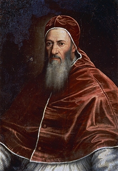
尤利烏三世
保祿四世
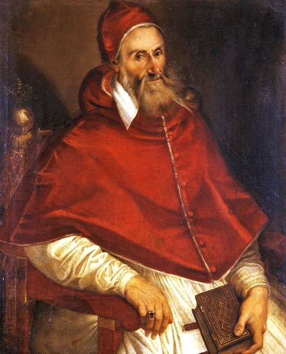
庇護四世
會議決定譴責新教所犯的“異端”信仰，並針對這些信仰發表聲明，澄清有關天主教教義與教導。這些聲明包含以下的主題：聖經，正典，聖傳，原罪，稱義，救恩，聖禮，彌撒，及敬拜聖徒。從1545年12月13日到1563年12月4日，除了9，10（1547年）兩個會程在波隆納召開以外，其餘23個會程都在天特舉行。
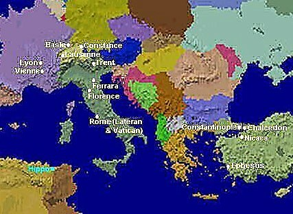
天主教各次“公會”的地點。
天特會議後，經過300年的時間，一直到1869年，天主教才再次召開公會。所以，天特會議的決定對天主教有深遠的影響。
1588年卡提（Pasquale
Cati ）所繪的“公會”
會議的目的與結果
天特會議的主要目的有兩層：
譴責改教的原則與教義，並澄清羅馬天主教在各項爭論上的立場與教義。
在天主教內部做出禮儀及道德上的改革。天主教內部行政的腐敗，是造成改教的重要因素。天特會議廢除了一些最為詬病的問題。
從這兩個主要目的中，天特會議又做出其他一些相關的決定：
確認教會是解釋聖經的最高權威。聖經與聖傳並重。
確定信心與功德在救恩上的互助關係。
再次肯定被改教者指責的贖罪卷、朝聖、敬拜聖徒與聖徒的遺物，以及敬拜馬利亞的正確性。但禁止濫用權力行使這些事。
出席的主教中部份人士支持聖經的權威及因信稱義，但保守份子最後贏得勝利，沒有對新教讓步。
議決摘要
針對天主教改革的決議：
主教必須常居其教區內；
主教不得兼領其他教區；
明文規定聖品人員的職責；
限制聖物及贖罪卷的使用范圍；
建立訓練聖職人員的神學院；
推崇阿奎諾的神學，尤其是“變質論”；
修正曆法的偏差，將閏年的次數調整（每400年有97閏年）。
針對新教的決議：
宣佈武加大本拉丁聖經是決定教義的權威，正典包括“次經”；
聖傳（教會傳統）與聖經的權威“平行”；
教會有七種聖禮【洗禮聖事（嬰兒洗禮）、堅振聖事（堅信禮）、聖體聖事（聖餐禮）、懺悔聖事（告解禮）、神品聖事（聖秩禮）、婚姻聖事（婚禮）、病人敷油（抹油禮）】；
肯定“煉獄”的信念；
彌撒是真實的犧牲，可以為過世的親人獻上；
信徒在聖餐禮只需要領聖體，而沒有必要領受聖杯；
稱義是基於恩典及信徒合作的善行功德而得到。
“教會歷史這一週”已經制作成3-5分鐘的視頻（蘇文峰主講），在橄欖社區網站（http://ocochome.info /）播出,《教會歷史這一周》的頁面短鏈接：http://wp.me/P5KG8P-7dW
或點擊后面網址觀看本期視頻：http://pan.baidu.com/s/1c2GW3z6
https://behold.oc.org/?p=34705
賀宗寧
本文原刊於《舉目》官網教會歷史這一週2017.07.21
公元1054年7月16日（北宋仁宗至和元年），東西教會正式分裂。東方的教會稱為“正教”，西方的教會稱為“公教”。正教的意思是指西方教會教導不正統。公教的意思是指東方教會仍屬於“大公的教會”。
1054年7月16日是教會歷史的一個分水嶺。羅馬教皇李奧九世與君士坦丁堡主教長克儒拉流一世（Michael
Cerularius I）,互相開除對方教籍 （excommunication，意味著判決對方下地獄）。因此造成了近1000年的東西方教會分裂。
教皇李奧九世，德國人，於1049年2月12日就任教皇，1054年4月19日逝世。君士坦丁堡主教長克儒拉流一世於1043年即位，1059年逝世。
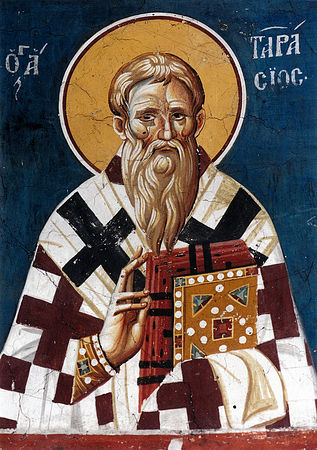
君士坦丁堡主教長克儒拉流一世
導火線
來自挪威的諾曼人，在征服法國西北岸的諾曼底之後，於11世紀南進，在意大利南方的西西里建立了殖民地,因此對意大利中部的教皇領地產生威脅。教皇李奧九世決定與神聖羅馬帝國皇帝亨利三世聯合，進攻諾曼人。因亨利臨時撤軍，李奧的軍隊不堪一擊。
1053年6月18日，李奧九世被諾曼人俘虜。因諾曼人也是基督徒，所以，只是軟禁李奧，允許他與外界保持聯繫。次年3月，諾曼人將李奧釋放。但他在回到羅馬後一個月，也就是1054年4月19日逝世。
對諾曼人的戰爭引起了教皇與君士坦丁堡為首的東方教會之間的糾紛。自第8世紀以來，因為希臘人的貿易與移民，在意大利南部以及西西里島的教會，都隸屬於東方教會。
李奧九世在1054年送了一封信給克儒拉流一世，信中大量引用“君士坦丁的捐贈”（Donation
of Constantine ）這份文件。指稱該文件的內容是真實的記載。
所謂“君士坦丁的捐贈”應是第8世紀一份偽造的文件，宣稱君士坦丁大帝在第4世紀時，將羅馬以及羅馬帝國西半部的統治權轉交（捐贈）給教皇。李奧九世在信中以此為據，宣佈唯有聖彼得的繼承人（羅馬主教）才是所有教會的首腦。
信中強烈的語氣，自認教皇的權威性，使得原本就複雜的羅馬與君士坦丁堡的關係，更為困難。克儒拉流視之為無禮的挑釁。他關閉所有在君士坦丁堡的拉丁（西方）教會，並提出對羅馬教皇的信仰質問，其中特別指出聖餐的“錯誤”。
在李奧逝世之前，他特別差派教皇特使團，由樞機主教洪伯特（Cardinal
Humbert）帶隊前往君士坦丁堡，要與克儒拉流談判，有關他在君士坦丁堡，對拉丁教會所採取的行動。這個特使團於1054年4月到達君士坦丁堡，與主教長及東羅馬皇帝舉行數次的談判，都沒有達成協議。
7月16日，克儒拉流正在聖索菲亞大教堂主持彌撒時，洪伯特到達教堂，在全體會眾面前，以激動的態度，嚴詞攻擊克儒拉流，並大量的引用“君士坦丁的捐贈”文件裡的內容，來強調羅馬教皇的至高性。
隨後，他拿出一份事先預備好的教皇敕令（顯然是在離開羅馬之前就寫好的），宣佈開除（excommunicate）克儒拉流的教籍。他將教皇敕令放在聖索菲亞教堂的祭壇上，然後轉身離開。
其實，李奧九世已經於4月19日逝世。這份敕令雖是李奧所寫。但因為教皇已經逝世，其合法性後來被質疑。克儒拉流馬上以子之矛攻子之盾，當場也宣佈將洪伯特及他的特使團成員全部開除教籍。主教長正式宣佈拒絕接受教皇的至高地位。這個舉動正式的將東西方教皇分裂為二。
君士坦丁堡的聖索菲亞大教堂
東西方教會分裂的主要原因
東西方教會之間在政治、文化與信念上，多年來已經有許多的差異與爭論，洪伯特特使團只是冰山一角。下面的表格將東西教會分裂的主要原因簡單的列出來。
原因
東方教會
西方教會
政治的對立
拜占庭（東羅馬）帝國。
神聖羅馬帝國。
教皇的權威
君士坦丁主教長是教會僅次於教皇的主教。
羅馬主教居所有教會之首，掌管所有教會。
神學的發展
迦西頓公會後不再有發展。
經由爭論與擴展繼續發展神學。
聖靈的辯論
相信聖靈由父而來。
相信聖靈由父、子而來。
聖像的爭議
在120年爭論後，決定聖像（但僅畫像，而不是雕像）可以在崇拜時使用。
多次介入東方教會對聖像的爭論。認為雕像也可以使用。
聖餐的看法
認為基督所說的是“奧秘”，信徒不應以有限的頭腦去探求。
認為基督身體實質的存在於餅杯之中。
1965年的“和好”
東西雙方互相開除教籍，一直“有效”到1965年。在前一年，教皇保祿六世與主教長雅典納格拉（Patriarch
Athenagoras）在耶路撒冷會面。當時決定雙方要在1965年同時舉行收回開除教籍敕令的儀式。
因此，在1965年12月7日，羅馬公教教皇保祿六世與希臘正教主教長雅典納格拉一世，共同主持了取消900年前開除教籍的儀式。保祿六世剛剛結束了第二次梵蒂岡公會，他在羅馬宣讀了公告，而同時在伊斯坦堡，也舉行了特別儀式。雙方正式在911年之後“和好”。
保祿六世與雅典納格拉在1964年於耶路撒冷會面
“教會歷史這一週”已經制作成3-5分鐘的視頻（蘇文峰主講），在橄欖社區網站（http://ocochome.info /）播出,《教會歷史這一周》的頁面短鏈接：http://wp.me/P5KG8P-7dW
或點擊后面網址觀看本期視頻：http://pan.baidu.com/s/1hscfFLy
https://behold.oc.org/?p=33566&
賀宗寧
本文原刊於《舉目》官網教會歷史這一週2017.10.13
公元1962年10月11日，天主教教宗若望23世宣佈第二次梵蒂岡公會開幕。這個公會將天主教帶進了20世紀新的時代。
教宗庇護12世在1958年過世後，天主教的樞機主教們在11輪投票后,才選出若望23世為新任教宗，時年77歲。大多數的人都認為他只是位過渡性質的教宗。但他在即位后3個月宣佈召開公會。
自從1870年第一次梵蒂岡公會宣佈教宗無誤後，教宗大權在握，將近100年來，天主教沒有再開過公會。若望23世本不需要再開公會，但他堅持要用主教們聯合的智慧來更新天主教。他的這個決定讓許多人感到意外。
在正式開會前，若望23世曾多次表達“現在是打開窗戶，引進新鮮空氣的時候了。”他也邀請了天主教以外其他基督教宗派與團體派代表來觀察這次的公會。接受邀請派觀察員的有：俄羅斯正教，埃及科普特正教，伊索比亞教會，敘利亞正教，東方敘利亞正教，亞美尼亞使徒教會，聖公會，路德會世界聯盟，長老會世界聯盟，福音路德宗，衛理公會世界大會，公理會國際大會，貴格會，基督門徒會，自由派國際基督教聯合會，南印度教會等。
1961年教廷成立基督教聯合促進部，協助籌辦公會並與其他基督教派別聯絡。次年，第二次梵蒂岡公會在1962年10月11日，正式在梵蒂岡的聖伯鐸大教堂（基督教翻譯為聖彼得大教堂）開始。大會分兩大派別。保守派希望保持天主教上千年的傳統；改革派則認為教會必須面對現代社會，做出合宜的改革。
教宗若望23世
教宗保祿6世
參與第二次梵蒂岡公會的有2000到2500位主教，另外還有上千名的觀察員。從1962到1965共有四個會期。在若望23世與保祿六世的支持下，改革派大獲全勝。但是，若望23世在1963年6月逝世，沒有看到最後成果。意大利的蒙提尼樞機主教接任教宗，成為保祿六世。在新任教宗的帶領下，第二次梵蒂岡公會於1965年第四次會期後結束。
整個公會前後一共出版了16份文件，主要是針對二次大戰以後社會文化的變遷，來調整教會的運作。這16份文件奠定了今天我們所看到的天主教。
這些文件的主旨之一是“和好”。因此，文件中改革的容包括：允許天主教徒可以與其他基督教宗派的信徒一起禱告；也鼓勵他們與其他非基督教信仰的人交友；天主教的彌撒可以改用非拉丁文的本地語言。其他方面的改革包括教育，媒體以及有關啟示方面的教導。
*保祿六世在1965年梵蒂岡二次公會時，將一份教宗諭旨交給太陽城正教主教長梅里頓。諭旨的內容是取消1054年造成東西教會分裂的、開除東方教會教籍的諭旨。
後來成為教宗本篤16世的德國神學家拉親爾指出，這次公會最重要的核心信息是：“逾越節預表基督救贖的奧秘（Paschal
Mystery ）是基督教的中心信念，因此也是所有基督徒生活，甚至基督徒一切事物的中心。”這次公會其他的重要信息與改革還包括，不再堅持以拉丁文為彌撒所使用的語言，而改用教會所在地點本地的語言，取消神父華麗的服飾，修改聖餐時的禱告文，簡化教會日曆，允許神父在彌撒時面對會眾，而不是僅能面對十字架。講堂內部的畫像、雕塑及音樂，也朝向現代化改進。
1962年參與開幕典禮的代表中，後來有四位先後接任教宗的位置。他們是：蒙提尼樞機主教（Giovanni Battista Cardinal
Montini，保祿六世）；陸其安諾主教（Bishop Albino Luciani, 若望保祿一世）；波蘭的沃提拉主教（Bishop Karol
Wojtyła,若望保祿二世）；以及德國的神學家顧問拉親爾（Joseph Ratzinger,本篤16世）。
教廷花了超過兩年的時間準備這次公會的召開。除了一個協調各方面的總體委員會外，另外還成立了10個特別委員會。除了邀請2100到2300位的主教出席外，還邀請了特別的神學專家為顧問，這些神學專家在會議中成為非常有影響的一群顧問。
除天主教外，有17個東正教與基督教新教的宗派派觀察員列席。
1962年10月11日，在若望23世主持下，第二次梵蒂岡公會正式開始。教宗在開幕式上以拉丁文“歡迎母親教會”（Gaudet
Mater Ecclesia ）向全體出席的主教及觀察員致辭：
“大公會議的任務在使教會自我革新，推進基督徒中間的合一，為能向人類更有力地宣講福音。接著，他特別提及大會的工作要則。例如：教會不得遠離教父所傳授的真理之神聖寶庫，同時應該顧到當前時代的趨勢。教會固然有保存看守真理寶庫的責任，但為盡好這天職，不應只滯留於研究古蹟而應以欣勤、愉快、勇敢無畏的精神，切實地努力工作，使能符合當代的需要﹔保存啟示真理是一事，其傳達的方式為另一事，所以在表達上該按照實際需要。對所有的謬誤，教會過去無時不在竭力抵制，並以嚴格方式予以懲罰﹔然而，今日教會卻願以仁慈對待它們，就是以充份地闡明福音的真義來辯明謬誤的道理。”
在開幕詞中，教宗也提到所有基督徒的合一：“耶穌基督受難前夕向天父熱切懇求
信從祂者的合一﹔天主教深感有職責努力促成這合一。”教宗說耶稣的祈禱，恰似放射上天救恩的三道神光：
第一，天主教友本身的團結﹔這一團結應堅強固守，放出光輝來作典範。
第二，與宗座分離的基督徒，亦顯示他們的熱切祈禱，深切盼望與天主教會合一。
第三，崇奉其他宗教的信徒，亦對天主教一致寄予重視和崇敬。教宗更盼望
聖教之光得普照大地，透過她超性的團結力，能有助於人類大家庭的團結合一。
第一會期在將近兩個月後，於12月8日正式休會。但在休會期間的1963年６月３日，若望23世逝世。按照天主教的傳統，一位教宗所召開的公會在這位教宗逝世後，是否繼續需要繼任教宗決定。６月21日選出保祿六世為新任教宗。他就任後立即宣佈繼續這次的公會。
保祿六世在宣佈繼續開會後，修改了第一會期中的一些組織與程序上的問題：邀請更多的平信徒以及非天主教的觀察員參加，將討論的主要項目減為17項，並取消全體大會時的秘密會議。
他在1963年9月29日第二會期開幕式強調這次公會的牧養性質：
要更完全的確認教會的性質以及主教的角色；
要更新教會；
要恢復所有基督徒的合一，包括為因天主教造成分裂的事尋求寬赦；
要開始與現今的世界對話。
第二會期於12月4日結束。但在結束時，比利時的樞機主教蘇能斯（Leo
Joseph Suenens ）提出一個問題：“我們憑什麼可以討論教會的現實狀況，如果有一半的教會成員根本沒有代表參加？”他所指的是女性信徒。教廷因為這個提議，在1964年第三會期中任命了23位婦女旁聽（auditor）。她們雖然在正式的辯論中沒有發言權，但她們參加公會委員會的文件起草，也每星期聚集討論並對文件草案加入意見。
第三會期從1964年9月14日到11月21日。在這個會期中通過了大公教會運動宣言（Unitatisredintegratio )，承認新教徒與東正教徒為“分離的弟兄”，稱呼東正教為東方的教會（ OrientaliumEcclesiarum ）。
第四會期在1965年9月14日開始，討論尚未有結論的11個議程主題。其中包括信仰自由，教會牧養與現今世界，神父的事奉與生活，宣教事工。此外，並完成對神啟示的教義，主教的牧養職分地位，神父應受的教育，一般信徒的教育以及平信徒的角色等等議題。
大會最後一天，12月8日，教宗與東正教主教長發表共同聲明，為過去雙方造成教會分裂的行為表示遺憾。
主要改革內容
第二次梵蒂岡公會在教宗保祿六世的主持下於1965年結束。主要結論是：
修訂彌撒及其他聖禮的儀式，採納不同文化與族群的特點；
鼓勵信徒讀聖經；
視平信徒與聖品人員為同等；
重建受洗前的信仰問答；
恢復執事的職位；
重思“權力”的內涵，強調事工的合作；
承認神在天主教以外的工作；
支持信仰自由；
接受世人基本是良善的看法。這點在基督在榮耀與權力中再來時得以完全。
第二次梵蒂岡公會有許多正面的成果，包括以本地語言進行彌撒，神父在主持彌撒時不再背對信徒，以及鼓勵信徒讀聖經等。但是，“承認神在天主教以外的工作”這一項結論不只是與新教及東正教和好，並在後來更進一步，成為教宗與達賴喇嘛會面的根基。將教會合一運動推廣到與所有宗教合一的方向。天主教不再堅持“天下人間沒有賜下別的名，我們可以靠著得救”的教導。這應該是一大錯誤。
“教會歷史這一週”已經制作成3-5分鐘的視頻（蘇文峰主講），在橄欖社區網站（http://ocochome.info/ ）播出,《教會歷史這一周》的頁面短鏈接：http://wp.me/P5KG8P-7dW
或點擊后面網址觀看本期視頻：http://pan.baidu.com/s/1jI461F4
https://behold.oc.org/?p=34527&
賀宗寧
本文原刊於《舉目》官網教會歷史這一週2017.12.08
公元1552年（明世宗嘉靖26年）12月3日，耶穌會創始人之一沙勿略壯志未酬，病逝中國門口。
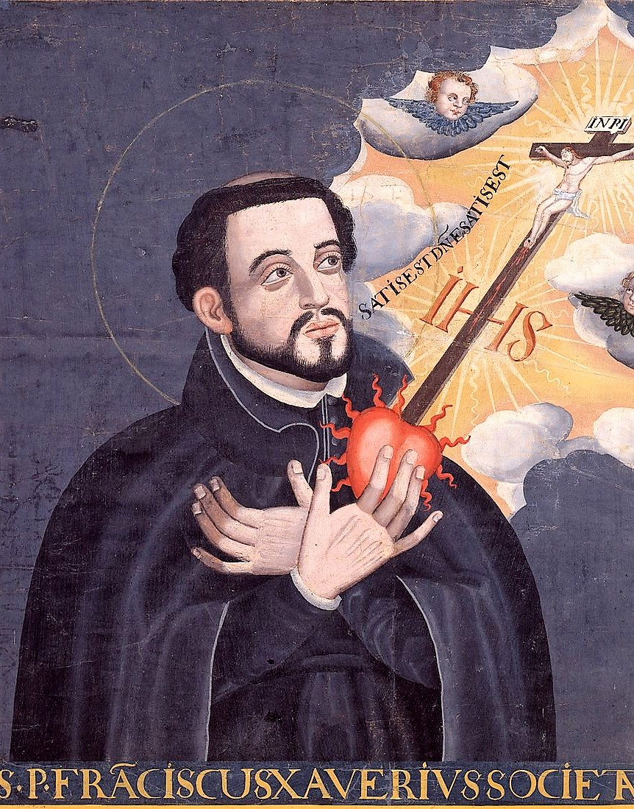
聖方濟各沙勿略
耶穌會標誌，IHS是希臘文ιησους（耶穌）拉丁文音譯“ihsous”的前三個字母，所以稱為“耶穌會”。
聖方濟各沙勿略（西班牙語：San Francisco Xavier，或Javier，1506年4月7日-1552年12月3日）是西班牙 籍天主教 傳教士。他是耶穌會第一任會督依納爵羅耀拉（Ignatius
of Loyola ）的同鄉，也是耶穌會起始的7位修士之一。他們在馬丁路德改教後17年，即1534年於巴黎的蒙馬特高地（Montmartre，就是聖心大教堂所在地）一同發神貧（poverty）及貞潔（chastity）的誓願，成立耶穌會。
後來沙勿略學習神學，於1537年祝聖為神父。1539年，他們7人正式成立會章，向教皇申請成立修會。1540年，教皇保祿三世批准耶穌會的成立，允許耶穌會直接向教皇負責。
羅耀拉時常以《馬太福音》16：26：“人若賺得了全世界，賠上了自己的生命，有什麼益處呢？”來勉勵比他小15歲的沙勿略。沙勿略在1541年成為耶穌會最早將天主教信仰傳播 到印度的葡屬殖民地，馬來半島的馬六甲，印尼的，婆羅洲以及 日本 的宣教士。
天主教會 稱他為“歷史上最偉大的傳教士”。同時尊其為中國 、日本，以及果阿 、澳門 兩個教區 之主保 （守護聖人）。1552年，沙勿略期望能進入中國宣教，但壯志未酬，在廣東台山外海的上川島等候接運的船時，罹病，12月3日病故於島上。
16世紀初葉的伊利安半島
納瓦拉王國的沙勿略皇家城堡
方濟各沙勿略於1506年4月7日，出生在西班牙北方的納瓦拉王國（Kingdom of
Navarre）的沙勿略皇家城堡內。他的父親是王宮總管，得到博咯尼亞大學的法律博士後，成為納瓦拉國王約翰三世的機密顧問及財務大臣。母親出身貴族，是納瓦拉王國著名的神學家與哲學家阿茲匹區塔（Martín
de Azpilcueta ）的親戚。沙勿略出身權貴家庭，大學時，被送到巴黎就讀，因此結識了另外6位與他一同創立耶穌會的青年。
宣教事工
1540年，葡萄牙國王約翰特命駐教廷大使晉謁教皇，要求差派宣教士到他新近在印度得到的領地傳福音。約翰認為在印度的葡萄牙殖民，在基督教價值上有鬆化的現象。經數次請求後，終於得到首肯，去招募剛成立耶穌會的那幾位年青人。
羅耀拉接到消息後，馬上任命他們中間的博巴迪亞（Nicholas
Bobadilla ）及羅椎格斯（Simão
Rodrigues ）去印度宣教。但在啟程前夕，博巴迪亞突然得了重病。稍微猶豫後，羅耀拉要求沙勿略代打。在這種情形下，沙勿略開始了第一次耶穌會宣教行程。
3月15日，沙勿略在匆忙中離開羅馬。隨身只帶了一本祈禱書，一份信仰問答，還有一本書《效法聖徒生命的榜樣》（De
Institutione bene vivendiper Exempla Sanctorum Marko
Marulić ）所寫。在反改教的天主教非常受歡迎。據說這是沙勿略後來在宣教工場唯一讀的書。他在6月到達里斯本。4天後，國王與王后接見了他與羅椎格斯。
沙勿略一生都獻給亞洲的宣教事工。除了一開始的印度果阿一帶外，他的工場主要在4個地區：馬來半島的馬六甲，東印尼的摩鹿加群島 ，日本和中國。他在各地工場所得到的資訊讓他感覺需要到這些地區的中心去。
向中國傳福音的負擔從他在印度時開始，越來越明顯。而在日本，那裡的文化更吸引他。只是，當他感覺到這些地區的文化是相關時，他就認為不能分別到這些地方去傳福音，而應去中國。因中國是這些文化的起源與中心。
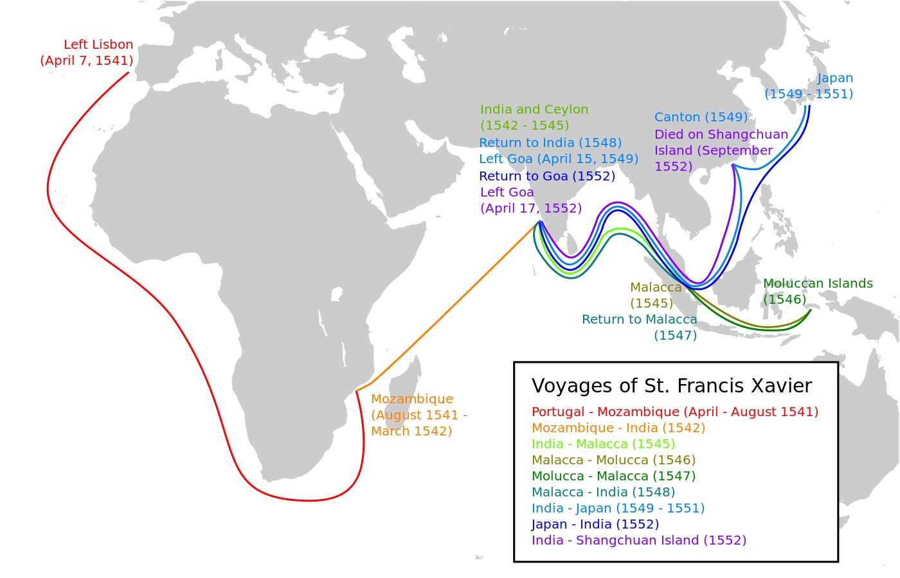
沙勿略宣教的旅程
印度
1541年4月7日，沙勿略在他35歲生日那天從葡萄牙里斯本 出發。行前，教皇任命他為教廷駐東方特使（papal
nuncio to the East）。
13個月之後，1542年5月6日，沙勿略抵達葡萄牙 在印度 的中心地果阿 。30年前，葡萄牙人在環繞世界的航程中，在印度果阿建立了殖民地。
按照約翰三世所交代的任務，沙勿略的責任是在這些葡萄牙移民中間，重建基督教的信仰。當時，在果阿城內有教堂，但一出城外就連傳道人都沒有。他決定先教導葡萄牙的移民。
在最初的5個月，他除了講道外，時常去看望病人。他也會到街上搖鈴，招呼兒童及僱傭來參加信理問答。他又成為聖保祿學院的院長。這是耶穌會在亞洲的第一個總部，目的是培訓平信徒成為神父。
不久沙勿略聽說在印度南端的科莫麟角（Cape Comorin）到錫蘭（現在的斯理蘭卡）旁邊的馬納爾島（Mannar），有一個區域稱為珍珠漁獵海岸（Pearl Fishery
Coast）。在那裡有一個稱為帕拉瓦（Paravas）的族群。這個海岸地區盛產珍珠，因此帕拉瓦人多為漁民，並常產珍珠。
10年前，在1532年，信奉伊斯蘭教的阿拉伯人入侵印度，帕拉瓦人求助於葡萄牙。1535年，在葡萄牙將軍瓦茲（Pedro
Vaz）的統領下，擊退了阿拉伯人。為了表示對葡萄牙人的感激，帕拉瓦人全體受洗加入天主教。
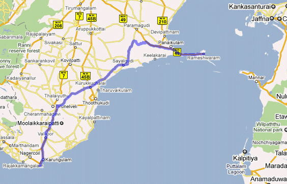
珍珠漁獵海岸
但帕拉瓦人之所以受洗，只是象徵性給葡萄牙人的謝禮，他們並沒有繼續追求基督教的信仰內涵。沙勿略在1542年10月，帶著幾位在果阿受過神學訓練的印度神父，到達珍珠漁獵海岸。他在那裡先學習帕拉瓦的語言。然後他將聖經教導那些已經受過洗的帕拉瓦人，同時也傳講福音給尚未受洗的。不過，他對婆羅門教高階層人的福音工作似乎沒有什麼成就。
他在南印度及錫蘭島一帶工作了3年。帶領了許多人信耶穌，(或真正認識他們已經“信”的耶穌)。他還沿著海岸建立了大約40間教堂。
在這段時間內，他也有機會去使徒多馬在麥拉坡爾的墳墓。麥拉坡爾現在屬於印度馬德拉斯邦，但當時這個地方是葡萄牙的屬地。
東南亞
1545年春天，沙勿略前往位於馬來半島當時屬於葡萄牙的馬六甲 ，直到1546年1月才離開，前往葡萄牙殖民地摩鹿加群島 。他在那裡傳教約一年半的時間。1547復活節後，他又回到馬六甲，並於該年12月與日本人彌次郎見面。
彌次郎在1545年聽說了沙勿略的故事，這次特別從日本鹿兒島來馬六甲與沙勿略見面。在馬六甲，他詳盡的告訴沙勿略有關日本的文化習俗。彌次郎後來成為第一位日本基督徒，取了基督教的名字為保祿聖塔菲。
日本
1549年8月15日，沙勿略在日本朋友彌次郎的陪伴引介下，攜同兩位耶穌會士（島來斯神父、斐迪南修士）輾轉抵達彌次郎的家鄉，日本南部九州 的鹿兒島 。成為第一位踏上日本國土的天主教傳教士。到年底，鹿兒島已經有150人、附近地區有450人領洗入教。
沙勿略登陸日本後，發現日本的情況和印度大異其趣。日本人的生活習慣，思想文化比印度複雜多了。他意識到不能把在印度的傳教方法搬到日本，在這裡首先必須學習日本語言，認識日本文化，哲學思想，並採用日本人的風俗習慣，要花費很長的時間才足以使一個人皈依基督。沙勿略從日本寫回歐洲 的信立刻被公佈，吸引了無數人的興趣，也產生極大的共鳴。
儘管他得到地方“大名 ”（daimyo）的支持，打算到京都 謁見天皇 並取得日本全國傳教之權，但兩者均未成功。
沙勿略是第一位到日本的耶穌會宣教士。他帶了幾幅馬利亞及馬利亞與耶穌的畫像。他用這幾幅畫將基督教介紹給日本人。在日本，由於日本語言與他以前所接觸過的語言有非常大的差異，他花了很大的功夫學日本話。
沙勿略在日本的宣教工作可以說是相當成功。在他1551年離開日本時，在平戶，鹿兒島，豐後等地的天主教友約有一千。鹿兒島 現今還樹立着沙勿略的紀念碑。
欲進中國
沙勿略在日本時發現，中國文化 對日本的影響很深，於是決心儘早訪問中國。但當時，外國傳教士要進入中國是一件非常困難的事。1552年，他組織了一個赴中國的葡萄牙使團，想要參見明朝皇帝 。
但他發現當初教皇頒給他的教廷特使任命狀留在馬六甲。於是，他與特使團於5月底折返馬六甲 ，但整團被當時控制馬六甲海港的亞戴德（Alv.d,’Ataide）扣留。於是他決心獨自前往中國，1552年8月底，他以距離中國廣東 海岸很近的上川島 （屬於台山 ）作為基地，計劃偷渡入境。但答應幫助他們偷渡的中國商人反悔，遲遲不來。
在等待中的沙勿略感染瘧疾 ，1552年12月3日晨，病逝於島上，年僅46歲，終未達成進入中國的心願。
同年10月6日，利瑪竇 生於意大利馬切拉塔（Macerata）。30年後，利瑪竇成功的將天主教傳入古老的中國。耶穌會 於1853年在上海 董家渡建造中國的第一座主教座堂 時，就將其命名為聖方濟各沙勿略堂 。
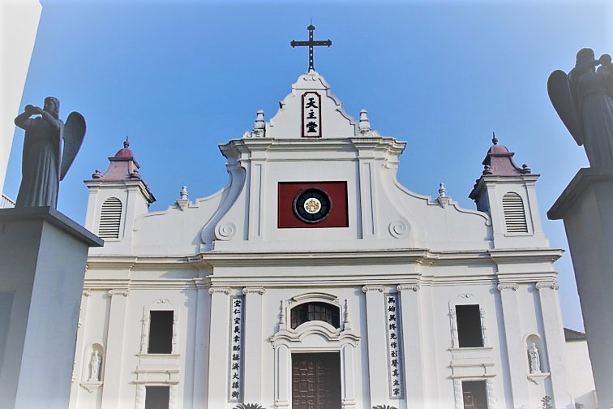
上海董家渡聖方濟各沙勿略天主堂
沙勿略死後67年，由教皇保祿五世在1619年10月25日封為福人，教皇貴格利15世在1622年3月12日，將其與羅耀拉同時封聖。
“教會歷史這一週”已經制作成3-5分鐘的視頻（蘇文峰主講），在橄欖社區網站（http://ocochome.info/ ）播出,《教會歷史這一周》的頁面短鏈接：http://wp.me/P5KG8P-7dW
或點擊后面網址觀看本期視頻：http://pan.baidu.com/s/1c77hpk
https://behold.oc.org/?p=34666
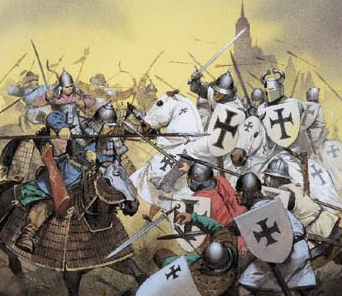
賀宗寧
本文原刊於《舉目》官網教會歷史這一週2017.12.02
公元1095年（宋哲宗趙煦紹聖2年，遼道宗耶律洪基壽昌元年，大理國皇帝高升泰上治元年）11月27日，教宗烏爾班二世（Pope Urban II，1042-1099）發表最影響中古時期歐洲的演講，號召歐洲基督徒發動十字軍東征，收復在穆斯林控制中的聖地。他宣稱這是“上帝的旨意”（ Deus
vult!）。
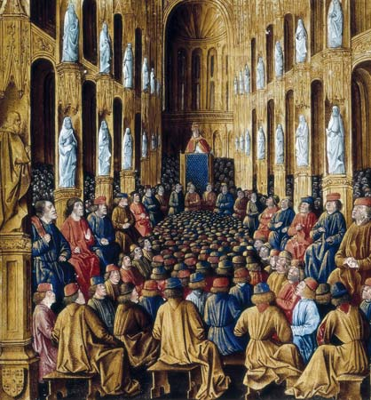
烏爾班二世在科勒蒙大教堂號召十字軍東征
從第6世紀開始，基督徒經常前往聖地朝聖，即使在穆斯林哈里發王國時期仍是如此。但當興起自中亞的塞爾柱突厥王國佔領耶路撒冷後，他們禁止基督徒進入耶路撒冷。
到了11世紀，突厥王國威脅說要進佔拜占庭（君士坦丁堡）時，拜占庭（東羅馬帝國）的皇帝亞勒克修一世，向羅馬的烏爾班教皇提出求援的要求。其實，這已經不是第一次求援，但這次對烏爾班二世來說，時機正好。因他正想要強化教皇的權威，藉此可以奪回聖地為名，將歐洲團結在教皇之下。
他在法國的科勒蒙召開公會，出席的有數百位聖品人員與貴族。在會中，烏爾班發表了一篇非常激動人心的講詞，號召歐洲人不分階級，放棄彼此之間的鬥爭，與所有的基督徒聯合，發動一場正義之戰，幫助在東方的弟兄們，奪回耶路撒冷。烏爾班貶低穆斯林，並誇大他們反基督教的行為。他更允諾為基督作戰而死的人，可以得到完全的赦免。不需要經過煉獄就可以直接進天堂。
十字軍出發
烏爾班的演說激動了許多聖品人員在全歐洲，鼓動各階層人民參與對抗穆斯林的聖戰。據說響應烏爾班向耶路撒冷進軍呼召的有6萬到10萬人，其中不全都是為了虔誠的原因。
有些貴族參戰是受到可以增加領地及財產的誘惑。這些貴族是後來在東征的路上及佔領耶路撒冷後，燒殺擄掠的主要因素。只要有反對的可能，他們就殺人並搶奪財物。
十字軍中又有許多佃農出身的烏合之眾，他們沒有受過訓練，缺乏軍事知識，最初碰到軍容整齊的穆斯林部隊時，被打的大敗。後來因為人數眾多，穆斯林在寡不敵眾的情形下不得不退守聖地。
兩軍交戰
烏爾班在1099年逝世。他死前兩個星期，十字軍攻佔了耶路撒冷。但以當時的傳信方式，這個“大好”的信息，他死前並不知道。這是後來近兩個世紀中七次的十字軍東征的第一次。到今天，“十字軍東征”在穆斯林的世界仍是個被痛恨的名詞。1881年，天主教宣佈烏爾班為聖徒。
穆斯林哈里發王國擴展圖
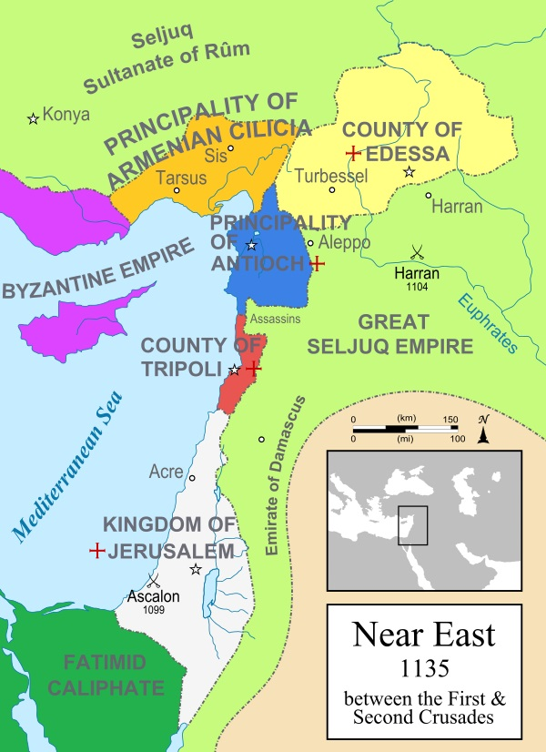
1135年地中海東岸地圖：法蘭克十字軍佔領的有紅十字標記☩耶路撒冷王國，特里波立郡，安提阿領地，埃德薩郡。棕色為亞美尼亞領地。紫色為拜占庭帝國的部份地區。淺綠為塞爾柱突厥，深綠為法提米哈里發王國。
現代歷史學者對十字軍有非常不同的看法。有些人認為十字軍的行為與教皇所宣示的目標及道德要求有天壤之別,以致教皇因為十字軍的燒殺擄掠而將其中的成員開除教籍。十字軍的領袖也曾將佔領的土地歸為己有，沒有歸還給拜占庭。在第4次東征時，十字軍進入君士坦丁堡，在那裡燒殺的都是基督徒。
雖然十字軍當初的暴行造成了今日對穆斯林宣教的困難，也使得東西方教會分裂，但十字軍對西方文明有深遠的影響：
1.資本主義的萌芽。十字軍東征打開了東方貿易的大門，使歐洲的商業、銀行和貨幣經濟發生了革命，並促進了城市的發展，中產階級的興起。
2.促進了西方軍事學術和軍事技術的發展。如西方人開始學會製造燃燒劑、火藥和火器；懂得使用指南針；海軍也有新的發展，搖槳戰船開始為帆船 所取代；輕騎兵 的地位與作用得到重視等。也加強了西歐天主教與封建諸侯及軍事武力的連接。造成日後國家主義的興起。
3.阿拉伯數字 、代數、航海羅盤 、火藥 和棉紙，都是在十字軍東侵 時期內傳到西歐的。
4.促進了文藝復興的出現。歐洲人入侵東方後，將仍在當地存在的古希臘文化 的殘存，帶回歐洲，至終導致了文藝復興 的出現；而戰爭中許多可歌可泣的英雄故事，虔誠信徒等等，也使中古時代的歐洲文化與文學得以興起。。
7次十字軍的大事記
次數
年代
聖地大事
１
1095-99
1100 法國人鮑德溫（Baldwin）自封為耶路撒冷王；
1104 穆斯林在哈蘭擊敗十字軍，阻止十字軍續往東進的攻勢；
1109 在圍城2000天後，攻進特利波立（Tripoli）；
1110 攻破貝魯特；
1112 推羅成功阻擋十字軍的進攻【
1119 阿勒波城主易加之（Ilghazi）大敗十字軍於薩瑪達（Sarmada）；
1124 十字軍攻克推羅，完成佔領海岸城市；
1128 回教徒臧宜（Zengi）成為阿勒波城主；
1135 臧宜攻大馬色，未成功；
1137 臧宜擒獲耶路撒冷王富爾克（Fulk），旋釋放之；
1140 耶路撒冷與大馬色聯軍戰臧宜。
２
1144-55
1144 臧宜取艾德撒，滅法蘭克東方四國之一；
1146 臧宜被刺，其子怒爾阿定繼位；
1147第二次十字軍試圖攻佔大馬色，未成功；
1154 怒爾阿定攻佔大馬色，統一伊斯蘭敘利亞；
1163-69 怒爾阿定攻埃及；
1171 怒爾阿定堂弟撒拉丁（Saladin）推翻法提米回教王，成為埃及統治者；
1174 怒爾阿定逝世，撒拉丁進駐大馬色；
1183 撒拉丁攻佔阿勒波，埃及、敘利亞統一。
３
1187-92
1187 撒拉丁打敗十字軍於加利利海邊之西亭，攻佔了耶路撒冷及十字軍所佔之大部分地區。十字軍至此僅餘推羅、特利波立及安提阿三城；
1190-92
在英國獅心王理查加入戰事之下，十字軍奪回數城，但未收復耶路撒冷，包括居比路及艾克城（Acre）。十字軍與拜佔庭關係惡化；
1193 薩拉丁在大馬色逝世，年55。數年內戰後，其帝國由其弟阿迪爾統一。
４＆５
1195-1201
1204十字軍攻佔東正教的君斯坦丁堡，擄掠該城內的基督徒。
1212
兒童十字軍。
６
1218-21
十字軍攻埃及，佔領達米耶塔，但在開羅之前被阿迪爾之子，卡米爾蘇丹擊退。
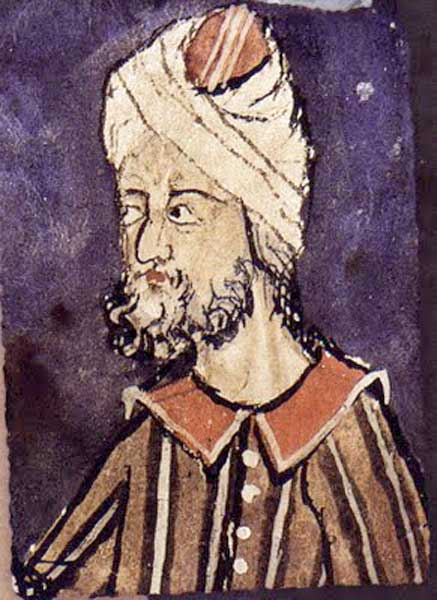
臧宜
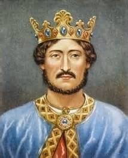
英國狮心王理查
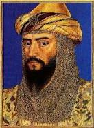
蘇丹薩拉丁
後續事件
1248-50年，法國國王路易九世攻埃及失敗，被擄。
1258年，成吉思汗之孫蒙古可汗旭烈兀(Hulegu,蒙古在伊朗的統治者，曾創建伊兒汗國。旭烈兀長兄蒙哥汗派他到伊斯蘭地區擴大蒙古的勢力）攻佔巴格達。
1260年，蒙古軍在攻佔阿勒波與大馬色後，戰敗於巴勒斯坦。突厥人興起，建立王國。
1270年，路易九世陣亡於北非的突尼斯。
1289年馬母魯克蘇丹卡拉溫取特利波立。1291蘇丹卡利爾（Khalil, 卡拉温之子)攻佔艾克城,十字軍所佔之聖地城池，至此完全喪失。
“教會歷史這一週”已經制作成3-5分鐘的視頻（蘇文峰主講），在橄欖社區網站（http://ocochome.info /）播出,《教會歷史這一周》的頁面短鏈接：http://wp.me/P5KG8P-7dW
或點擊后面網址觀看本期視頻：http://pan.baidu.com/s/1i4Z20kt
https://behold.oc.org/?p=34560